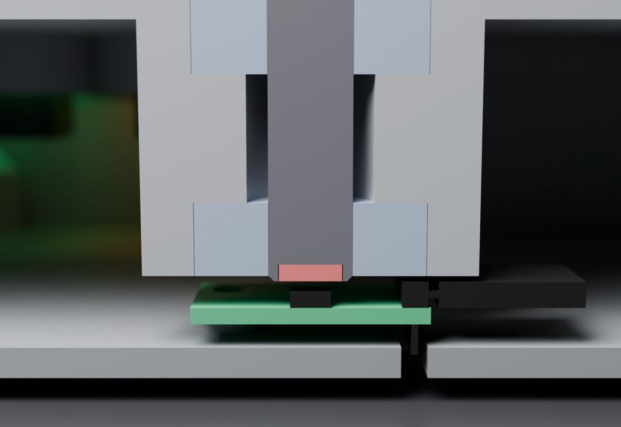
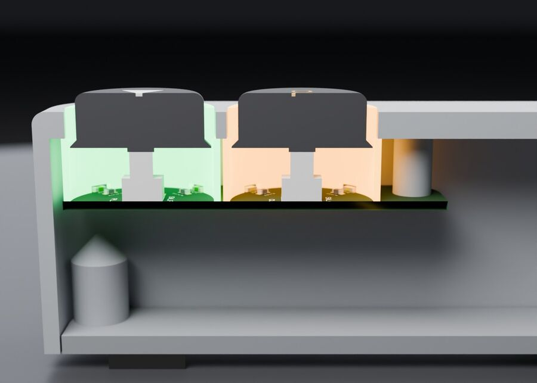

freedj: a DJ deck you can build yourself.
I'm building a small CDJ-style player. It's an ESP32-P4 board, a 4" touch screen, a jog platter spinning on two skateboard bearings, and a 3D-printed case. Plug in a rekordbox USB stick and play. It syncs with Pioneer players over Pro DJ Link.
Everything is open: the firmware, the CAD, and the notes on what broke along the way.
— Dan (audiodestrukt)

how it got here


what it does today
- plays WAV and MP3 from a rekordbox USB stick or an SD card
- rekordbox colour waveforms, beat grids, hot cues A–H and memory cues
- pitch ±6/10/16 % and WIDE, key lock (master tempo)
- CDJ-style CUE, loops and beat loops, beat jump, quantize, slip, reverse
- beat sync over Pro DJ Link: follows the tempo master, or takes master
- real jog: a magnet in the shaft over an AS5600 sensor
- works with a Numark DJ2Go, or a Pioneer XDJ-1000MK2 as a USB controller
- build guide with off-the-shelf parts only (no custom boards)
- playlists, titles and artists from rekordbox
- two decks and a mixer in one box
what's inside



build one
The first release will use only parts you can buy: the Waveshare ESP32-P4 dev kit, a 4" SPI touch screen, an AS5600 board, two bearings, two panel buttons and a slide pot. Print the case on any printer with a ~256 mm bed. About nine wires, no custom PCB.
The guide isn't written yet. The code and CAD are already public if you want to dig in: github.com/audiodestrukt/freedj-esp. More in the FAQ.
the software version
Before the hardware there was freedj-3000: the same idea as software, written in Rust. It runs on a Raspberry Pi 5, a Linux PC, and the iPad and iPhone as OpenDeck DJ. Same Pro DJ Link sync, plus FLAC/AAC/OGG/AIFF and its own beat detection. Source: github.com/audiodestrukt/freedj-3000.
build log
Write-ups on the audiodestrukt blog, oldest first.
- 2026-10-04I cloned an XDJ-1000 and it runs on a Raspberry Pi
- 2026-10-14Is an $80 Raspberry Pi faster than an XDJ-1000?
- 2026-10-29The waveform was stealing my audio: debugging an ESP32-P4 DJ deck
- 2026-10-30ESP32-P4 DJ deck: where it stands, and how much CPU is left
- 2026-10-31Beat sync over Pro DJ Link, with rekordbox's beat grids
- 2026-10-31Cues, loops, slip, and becoming the tempo master
- 2026-10-31An XDJ-style screen, a lying frame counter, and four USB ports that were really three
help out
- got a CDJ-3000? ten minutes with this script would tell us if sync works
- map a controller you own, remix the case, or send a fix
- found a bug? open an issue